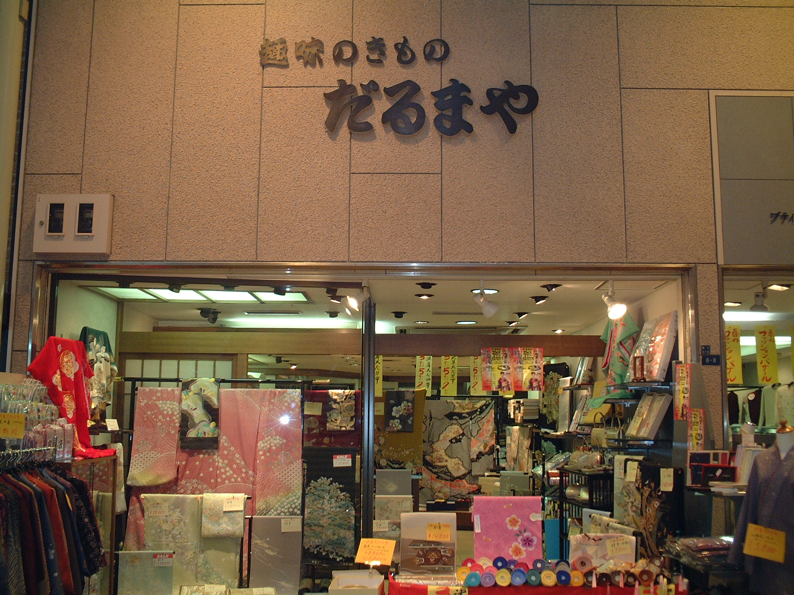

閉店感謝
最後で最大の
売り出し
着物・帯・反物・和装小物を、感謝価格でご用意します。
現品限り・売り切れ次第終了
10日間限定 同時開催
8月27日（木）〜9月6日（日）
感謝価格の店内在庫と、この期間だけの特別出品を一堂に。
閉店前、いちばん見応えのある10日間です。
閉店感謝
着物・帯・反物・和装小物を、感謝価格でご用意します。
現品限り・売り切れ次第終了
特別企画
この期間だけの特別出品。上質な着物・帯・反物を、ゆっくりご覧いただけます。
お探しの一品との出会いを
だるまや最後の10日間。どうぞお見逃しなく。
閉店感謝セールのご案内
8月8日（土）〜8月26日（水）
長年の感謝を込めて、店内の商品を特別価格でご用意します。
8月27日（木）〜9月6日（日）
感謝価格の店内在庫と、期間限定の特別出品を一堂にご覧いただけます。
9月7日（月）〜9月23日（水）
最終営業日まで、残りの商品を感謝価格でご案内します。

皆様へ
だるまや呉服店は、2026年9月23日（水）をもって閉店いたします。駒川商店街で長きにわたりお店を続けてこられたのは、足を運んでくださった皆様のおかげです。
着物のお仕立てやコーディネートのご相談、お手入れのご相談まで、地元の皆様に寄り添えたことを誇りに思っております。最後の営業日まで、皆様のご来店を心よりお待ちしております。
ご来店・お問い合わせ
商品の在庫確認やご来店・お仕立てのご相談は、お電話にて承ります。
〒546-0043 大阪市東住吉区駒川5-8-8
営業時間：10:00〜18:30（火曜定休）
場所: 駒川商店街 アーケード内
雨の日でも濡れずにご来店いただけます。お車でお越しの際は商店街周辺のコインパーキングをご利用ください。
最終営業日：2026年9月23日（水） ※商品がなくなり次第終了となります。